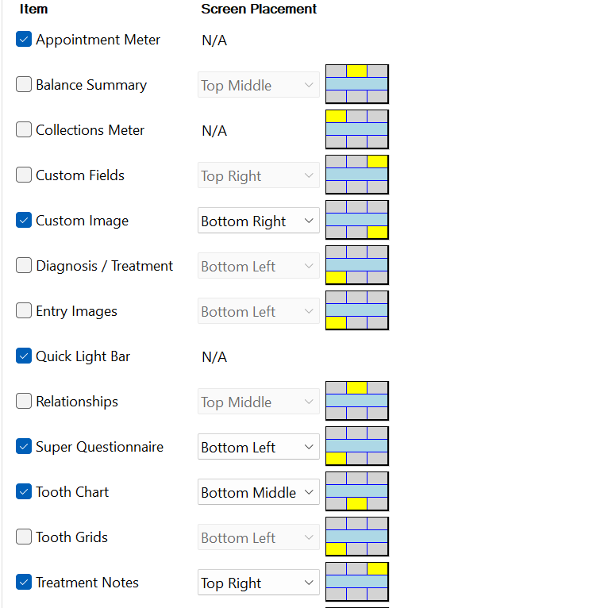
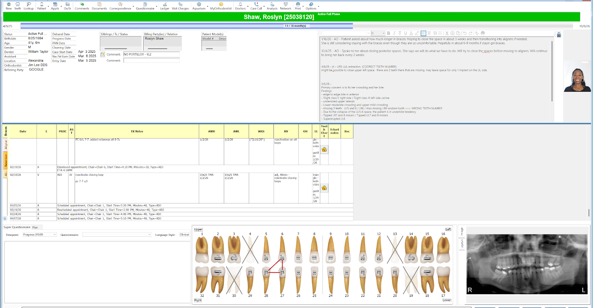
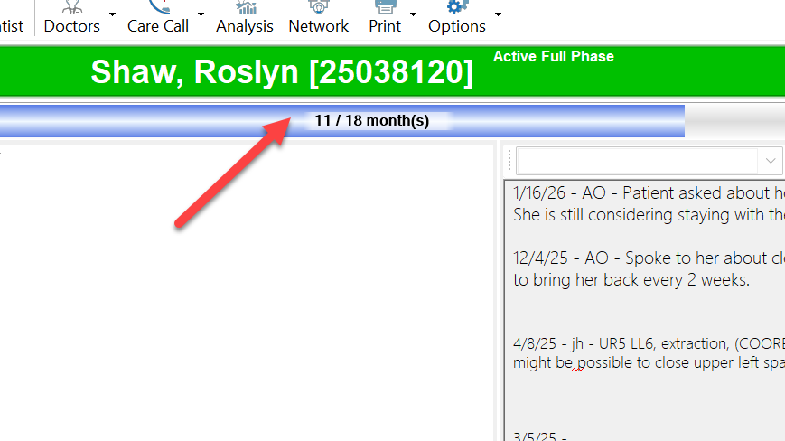
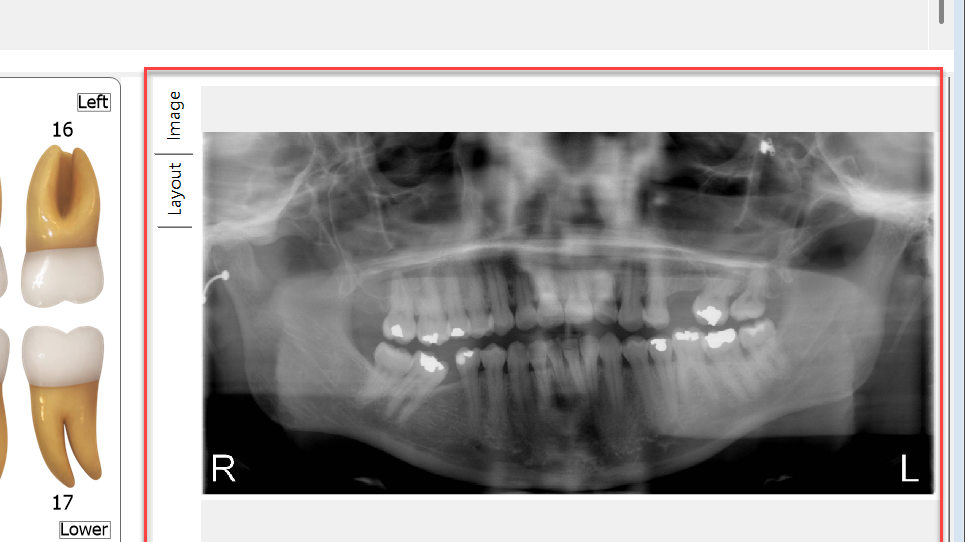
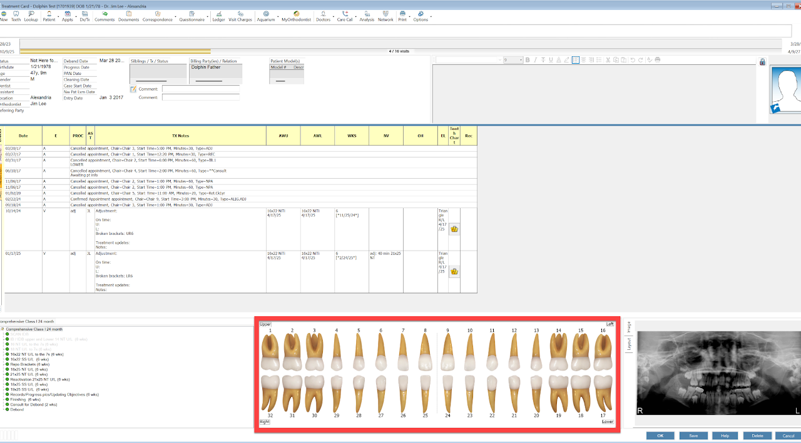
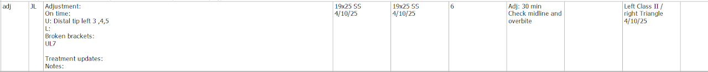
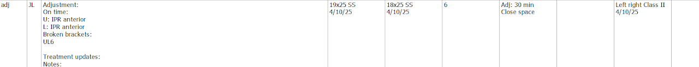
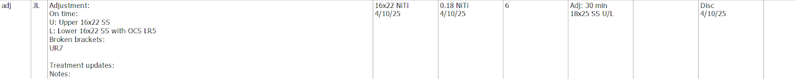
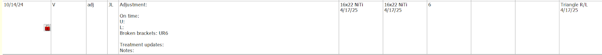

Documentation & the Treatment Card
Writing notes good enough that the next tech, or you in six weeks, knows exactly what to do.
This module assumes you are already working chairside and comfortable with the material from Week 1. It is the bridge to working independently, which is why the guide it comes from is called A Guide to Autonomy.
By the end of this module you will be able to
- Set up your treatment card so every section is visible.
- Name each section of the card and say what belongs in it.
- Write a chart entry using the adjustment template.
- Write a next visit note specific enough to act on without asking anyone.
- Update the tooth chart and write a usable GPS note.
- Look at a weak note and say concretely what is missing.
Why this mattersThree reasons we write good notes
- Quality of carePatients deserve continuity. The note is how continuity survives between appointments and between people.
- IndependenceCan you operate without pulling the doctor or another tech over? Good notes are what make that possible.
- EfficiencyWithout good notes we reinvent the wheel every visit, wasting the team's time and the patient's.
Reread it at the end of the appointment and ask: if I read this next time, would I know what to do? If the answer is no, it is not finished.
Section 1Setting up your treatment card
- Click the options button at the top
- Click Screen Setup, Colors, and Fonts
- Confirm the settings match oursThen double-check that every treatment card section below is visible. If a section is hidden, you will miss information that is actually there.


Section 2The parts of the card
Treatment time bar
Tells you whether we are on time, behind, or ahead. The clinical team works toward getting the patient finished by the last month of this bar. Confirm the treatment time is correct. It frequently is not, and the fix comes from the front desk, not from you.

Treatment notes (top right)
The general direction of treatment. Moves, multiple broken brackets, non-compliance, anything affecting treatment time. Full detail in Section 3.
Tx card chart entries
Three categories: braces, aligners, retention. This is the per-appointment record. Full detail in Section 4.
Super questionnaire / plan
Under construction. It should eventually hold wire sequence, restorative plan, and the steps of treatment. For now, treatment direction goes in the treatment notes section instead.
Tooth chart
A visual of what we are doing at each appointment. Full detail in Section 5.
Custom image
Bottom right, set to the last updated PAN. It saves going back and forth to Dolphin imaging, especially while updating the tooth chart. If there is nothing here, we do not have a PAN.

Quick light bar
Bottom left. Six buttons: Assistant Treating, Needs Attention, Immediate Attention, Doctor Treating, Doctor Assistant Treating, Chair Occupied. A second doctor-treating button is coming for two-doctor days.
Appointment time bar
It is the technician's responsibility to use their time wisely.
Section 3Treatment notes: direction
The treatment notes section exists to give direction. It should carry the treatment plan with objectives, any new objectives, and how we are moving toward them. This is what creates continuity.
What belongs in treatment notes:
- Treatment plan changes
- Treatment time changes, and anything influencing treatment time
- Current objectives
- Important dates, at the bottom: patients who are moving, when braces come off
- Future notes, for example gingivectomy at the end of treatment, or LBRs at the end of treatment
- Broken brackets, and any change in treatment time because of them
- Any discussion you had with the patient
Section 4Writing chart entries
The adjustment template
- On time (Y/N, and how many minutes?)
- OH (P/F/G/E)
- Broken brackets (add to tx notes and update)
- Current objectives
- What was done today?
- Wire changes? (Y/N)
- Elastics (compliance)
Update the treatment plan when any of these happen
- Any change in general direction
- Any mention of a treatment time estimate or a treatment time correction
- The patient or parent decides on a change: extraction to nonextraction, LBRs yes or no and where, leaving spaces open, implants and restorative
- The patient needs to be out by a certain time
- What we need to accomplish before the patient is done
- IPR or enamelplasty, and that the patient or parent gave consent
- Extraction to be done when, or that a referral was written today
What belongs in notes
- Any questions or concerns the patient had, and the answer given
- Whether the patient is happy, sad, upset, or indifferent (a code is fine here)
- Whether we asked for a review
- Elastic and oral hygiene compliance
- Changes in medical history
- Any scheduling preference for the patient
- Vacations or trips coming up
Section 5The next visit note
This is the most important thing you write. Write it with as much detail as possible, to yourself. The question it has to answer is not what happened today, it is what the next person should do.
What it needs to contain
- Guidance. What are we working on? This is the most important part. Do not simply write down what the doctor said. It has to be understandable what we are trying to accomplish with the bends.
- Repos: which teeth, and why if possible.
- Measurements: get a perio probe. Midlines and overbite, in enough detail to tell next time whether they are improving.
- Bite: get the articulating paper out and check contacts.
- Spaces: if we are closing space, say where it is and estimate how much, checking the wire coming out the back.
- Elastics: the type, every time.
- Wire: do not forget to update it, in the correct column.
- IPR: if mentioned, point out the exact location.
- Phase: what phase are we in, or what needs to happen to finish this patient.
- ADJ
- Check bite
- Check "tooth"
- Finishing bends
- Consult for debond
- "Blank"
- Upgrade wires
- Anything vague
If we need to check a tooth or a bite, be specific about which and why.
When you arrive at a note that is vague or missing
It will happen. Do not guess and do not skip it. Look at the patient and ask what you can see:
- Upper teeth overlapped with the lower brackets, which points to step-down bends
- Upper arch overexpanded over the lower arch, which points to arch coordination: upper compression, lower expansion
- Look through the treatment card. Objectives should be in the treatment notes.
If the objectives are not there, alert the clinic coordinator, not the doctor. Then come find me in the conference room.
Check notes at the beginning of the day, not when the patient is already in the chair. If you do not know how to move forward on someone, raise it at the morning huddle or with the clinic coordinator. And before you put yourself on the light bar, type your note if you are about to leave.
Housekeeping that goes with the note
- Treatment time: check it. It is often wrong, and the front desk makes the correction.
- Six week appointments for all DQ and most kids, except those moving or needing to finish by a specific date. Check the labels.
- Treatment options: confirm at scan which option we are going with.
Section 6The tooth chart

Every IB should have an initiated tooth chart. No exceptions.
At each appointment, make sure you note:
- Broken brackets
- Annotations for restorative
- Space closure
- Elastics
- New permanent teeth
- New bondings and repositions
Section 7GPS notes
The GPS note is the primary way you communicate with the front desk to schedule the next appointment. If it is incomplete, the appointment gets booked wrong, and you inherit the problem six weeks later.
What every GPS note includes
- Appointment typeWhat kind of visit this is.
- How far outHow many weeks from now, for example six weeks.
- How longHow many minutes to allocate, for example thirty.
- Special needsAnything the front desk has to account for. For example, with a specific tech, or need an update from the GP.
Two ways to open it
Option 1, from the light bar. Select the patient on the light bar and right-click their colored block. A menu pops up. Go to the bottom where it says GPS note, and a window opens for you to write it.

Option 2, from the Patient GPS. On the Main menu on the left of the dashboard, click Patient GPS. It shows every patient currently in the treatment area. Click the GPS notes area, then the three-dot button, and a window opens for the note.
Section 8Scenarios
Work each one before opening the answers. The point is not to be right, it is to build the habit of looking at a note and immediately seeing what is missing from it.
- Patient is 20 months into a 24 month treatment
- You have 30 minutes for the adjustment
- There is nothing in the treatment notes section

Question 1: What can be improved with the note?
- No direction
- Next visit note is too broad
- Missing type of elastic
- Missing oral hygiene status
- Focused only on technicals
- No measurements, so we cannot tell whether anything improved
Question 2: What do you see here?
- UR1 is stepped up. Check the previous notes for why. It appears to have created a canting.
- Missing lower incisor. Are we trying to get the midlines on? Check the notes. Ask about elastic compliance. If the patient has not been compliant, rediscuss how to improve it and that treatment time may be affected.
- Black triangles. Look for any notes on them.
Question 3: How do you write a complete and helpful note?
Update the treatment note and next visit note with the direction:
- Patient is missing a lower incisor. We are trying to give the patient a midline through Class II elastics on the left side and distal tip on the UL side. Upper midline is 2.5 mm to the right. Lower midline is between the lower central and LL lateral incisor. Fix canting by leveling the upper 1s, and fix the deep overbite at 50%. Patient does not want IPR for black triangles.
- Patient has 4 more appointments left, ask to come back every 4 weeks.
- Timeline: any trips.
- Update the elastic type. If the patient is wearing them, can you move up?
- Update OH.
- Patient is 22 months into a 24 month treatment
- You have 30 minutes for the adjustment
- There is nothing in the treatment notes section

Question 1: What can be improved with the note?
- No direction
- Next visit note is too broad
- Missing type of elastic
- Missing oral hygiene status
- Focused only on technicals
- Where are the spaces? No measurements
- "IPR anterior" is too broad
- Did the patient consent to IPR?
Question 2: What do you see here?
- Missing lower premolars. The patient may have been in underbite. Check the pictures.
- Spaces lower 2-3 and LL3-4.
- Black triangles. There was IPR done before.
Question 3: How do you write a complete and helpful note?
- Underbite was corrected by the premolar extraction. We are doing IPR on the mesial of the lower 3 to mesial of the lower 3, and upper mesial 2-2, for black triangles with disc (.2 mm). Patient wants ALL black triangles completely eliminated. Dr. Lee says we can minimize but cannot completely eliminate them. Midlines are on. Spaces on the lower 2-3 (1 mm) and LL3-4 (.5 mm).
- Patient has 2 more appointments left, ask to come back every 4 weeks.
- Update the elastic type.
- Patient is 12 months into a 24 month treatment
- You have 30 minutes for the adjustment
- There is nothing in the treatment notes section

Question 1: What can be improved with the note?
- Next visit note does not bring up the LR5
- Missing oral hygiene status
- Wires were not updated in the appropriate column
Question 2: What do you see here?
- Rotated LR5. What should we have here that is missing?
- Self ligation upper and traditional lower.
- Space on the UL2-3. What should we have here that is missing?
- Do we have to do what the next note says? What would you do?
Question 3: How do you write a complete and helpful note?
- U: Space UL2-3 (1 mm). PC placed upper 3-3 (ST 3s).
- L: Reactivated OCS LR5 with PC LR6 to 5.
- Update the wires in the correct column.
- OH: Good.
- Patient is 12 months into a 24 month treatment
- Patient is 10 minutes late for a 30 minute adjustment
- There is nothing in the treatment notes section

Question 1: What can be improved with the note?
- No next visit note for 10/14/24
- On-time status is blank
- No oral hygiene status
- Probably forgot a wire change update
- Was there discussion about the missed appointments?
- Treatment notes section needs updating
- Elastic strength?
Question 2: What do you see here?
- The patient has not been showing up consistently.
- Oral hygiene is poor.
Question 3: How do you write a complete and helpful note?
- OH discussion. Patient was missing plaque at the gumline. Beginning white spot lesions. Patient was allowed to floss. Discussion with parent on home care and soda drinking.
- Appointment consistency. Patient was 10 minutes late and has not been consistent. Discussion with patient and parent on lengthened treatment time. Did not see the patient for 3 months from 10/24 to 1/25, and again 3 months from 1/25 to 4/25. Both patient and parent were notified.
- Broken brackets. Discussed multiple broken brackets due to eating hard things.
- Update the wires in the correct column. Should be 18x25 NT in the 1/17/25 note.
Put the following tooth chart together for the patient.
- TX CHANGE: extraction of LR5 ONLY
- Recommended Tx: patient opted for U/L traditional braces, 24 months, 3 week adjustments, extraction of LR5, U/L 3-3 LBRs
- Next steps: 1. scan for IDB 2. IB U/L traditional
- Objectives: extract LR5, close spaces, alignment, underbite camouflage, try to finish by graduation
- End of treatment: U/L 3-3 LBR
Question: At the next visit the patient has a broken bracket on the LL7. How do you update the tooth chart?
- Create a new chart entry for the day
- Open the tooth chart
- Go to bracket and click
- Find the bracket type at the bottom leftClick and scroll down to BB1.
- Select the tooth that is broken
Module check-off
Module sign-off
Review three of your own recent notes with the clinic coordinator. The bar is not whether they are neat, it is whether another tech could pick up the patient cold and know what to do.